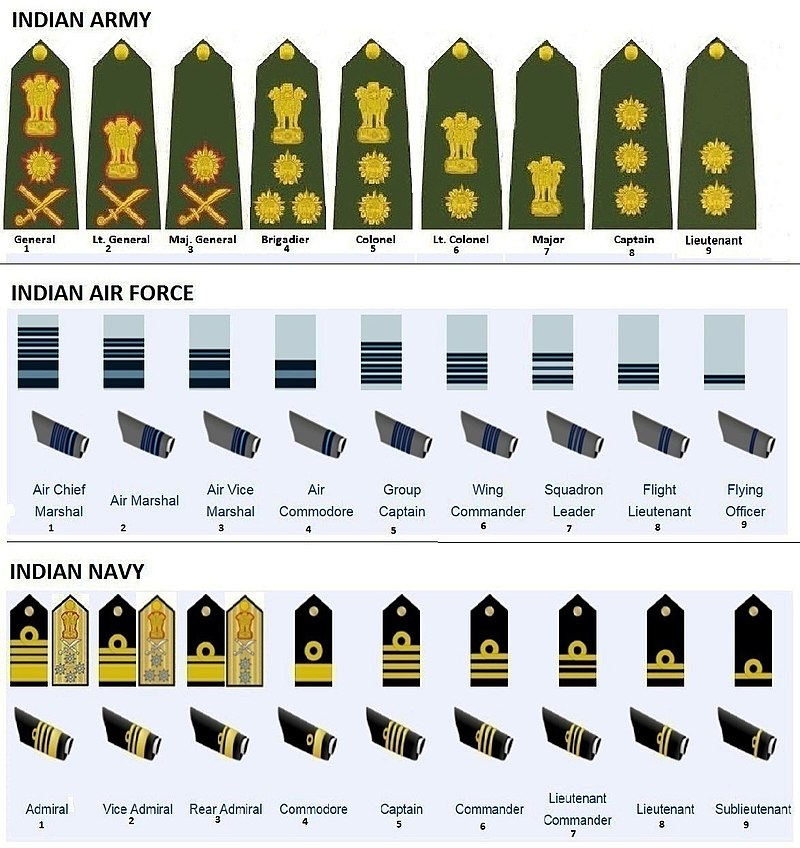

The Indian Armed Forces are the military forces of the Republic of India.
It consists of three professional uniformed services: the Indian Army, Indian Navy, and Indian Air Force.
Additionally, the Indian Armed Forces are supported by the Indian Coast Guard and paramilitary organisations
(Assam Rifles, and Special Frontier Force) and various inter-service commands and institutions such as the Strategic Forces Command,
the Andaman and Nicobar Command and the Integrated Defence Staff.
The President of India is the Supreme Commander of the Indian Armed Forces.
The Indian Armed Forces are under the management of the Ministry of Defence (MoD) of the Government of India.
Founded : 1 April 1895; 125 years ago
Motto(s) : "Service Before Self"
Motto(s) : "Service Before Self"
The Indian Army is the land-based branch and the largest component of the Indian Armed Forces.
The President of India is the Supreme Commander of the Indian Army,
and its professional head is the Chief of Army Staff (COAS), who is a four-star general.
Two officers have been conferred with the rank of field marshal, a five-star rank, Field Marshal K M Cariappa and Field Marshal Sam Manekshaw.

Founded : 5 September 1612; 407 years ago
Motto(s): May the Lord of the Water be auspicious unto us
Motto(s): May the Lord of the Water be auspicious unto us
The Indian Navy is the naval branch of the Indian Armed Forces.
The President of India is the Supreme Commander of the Indian Navy.
The Chief of Naval Staff, a four-star admiral, commands the navy.
The primary objective of the navy is to safeguard the nation's maritime borders both in war and peace.
In co-operation with the Indian Coast Guard, ensure good order and stability in India's maritime zones of responsibility.
Provide maritime assistance (including disaster relief) in India's maritime neighbourhood.
Founded : 8 October 1932; 87 years ago
Motto(s) : Touch the Sky with Glory
Motto(s) : Touch the Sky with Glory
The Indian Air Force is the air arm of the Indian Armed Forces.
The Chief of Air Staff, an air chief marshal, is a four-star officer and is
responsible for the bulk of operational command of the Air Force.
The rank of Marshal of the Air Force has been conferred by the President of India to Arjan Singh.
Its primary mission is to secure Indian airspace and to conduct aerial warfare during armed conflict.
The Indian Air Force is divided into five operational and two functional commands.
BEST VIEWED ON PC ON CHROME,OPERA,EDGE